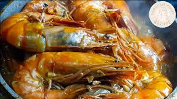
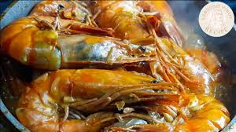

Prawns Alavar Recipe
Ingredients:
- 1 kg fresh prawns, cleaned
- 1 cup Alavar sauce (or homemade Alavar-style sauce)
- 1 cup coconut milk
- 2 tablespoons annatto oil
- 1 medium onion, chopped
- 4 cloves garlic, minced
- 1 thumb-sized ginger, sliced
- 2 tablespoons crab fat (optional, for extra richness)
- Salt and pepper to taste
- Steamed rice for serving
Instructions:
- In a large pan, heat annatto oil over medium heat. Sauté the onion, garlic, and ginger until fragrant.
- Add the Alavar sauce and crab fat (if using). Stir well to combine.
- Pour in the coconut milk and let it simmer for about 5 minutes.
- Add the prawns and cook for another 5-7 minutes, or until they turn bright orange and are fully cooked.
- Season with salt and pepper to taste.
- Serve hot with steamed rice and enjoy!
Cooking Tips:
For a more intense flavor, marinate the prawns in Alavar sauce for 30 minutes before cooking.
About Alavar
Prawns Alavar is a specialty from Zamboanga, Philippines. It is famous for its rich, coconut-based sauce infused with Alavar paste, a secret blend of spices and seafood goodness. The dish is a staple in many Filipino seafood feasts and is best enjoyed with steaming hot rice.
Gallery
Check out these mouth-watering Prawns Alavar photos!

 

Blog
Stay tuned for articles on Prawns Alavar variations, cooking tips, and the history of this delicious dish!